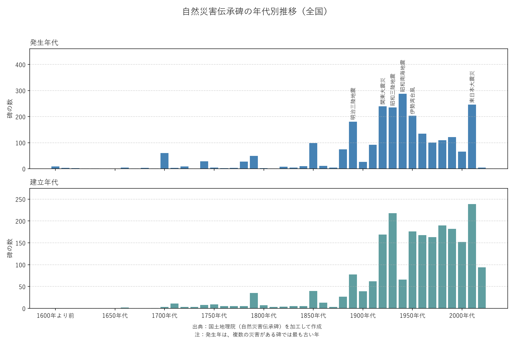
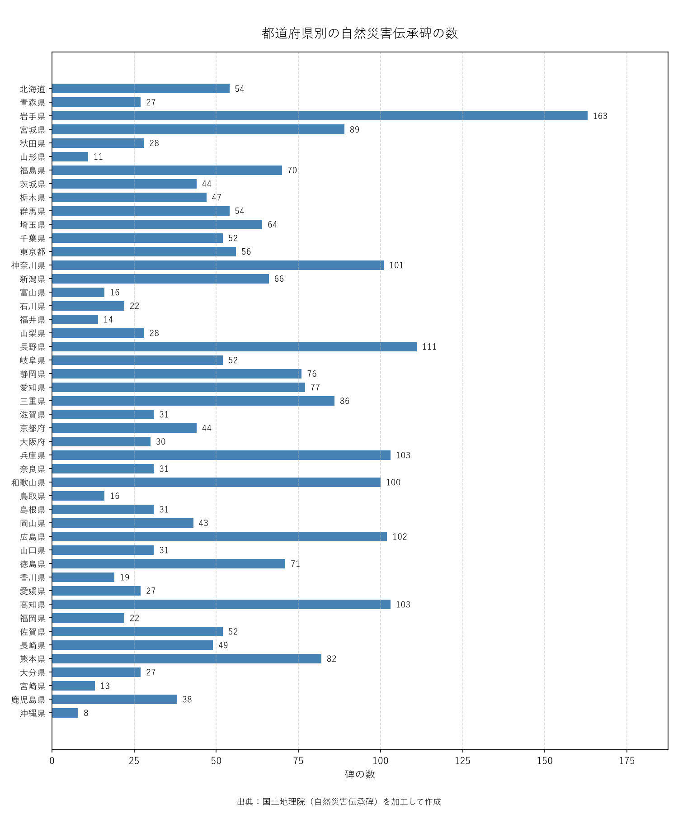

伝承碑データ取得日：2026-09-24 碑の数：2,481基（47都道府県）
国土地理院の自然災害伝承碑に、碑ごとの地形（標高・傾斜・地形分類・河川や海岸との位置関係）を付け、碑のまわり（100m〜2,000m）の地点と比べた結果をまとめたものです。結果は地形との相関を示すもので、災害の予測・安全の保証ではありません。
スマホでは地図を横にずらして見られます。県の四角を押すと、その県のページに移ります。
| 都道府県 | 地図 | 碑の数 | 移転碑 | 洪水 | 地震 | 津波 | 土砂災害 | 高潮 | 火山災害 | その他 |
|---|---|---|---|---|---|---|---|---|---|---|
| 北海道 | 地図 | 54 | 3 | 21 | 11 | 12 | 8 | 0 | 15 | 2 |
| 青森県 | 地図 | 27 | 1 | 11 | 13 | 9 | 8 | 0 | 0 | 1 |
| 岩手県 | 地図 | 163 | 17 | 18 | 142 | 142 | 1 | 0 | 0 | 1 |
| 宮城県 | 地図 | 89 | 4 | 8 | 80 | 77 | 8 | 0 | 0 | 0 |
| 秋田県 | 地図 | 28 | 1 | 12 | 16 | 9 | 3 | 0 | 0 | 0 |
| 山形県 | 地図 | 11 | 0 | 5 | 2 | 1 | 5 | 0 | 0 | 3 |
| 福島県 | 地図 | 70 | 4 | 14 | 43 | 39 | 10 | 0 | 10 | 7 |
| 茨城県 | 地図 | 44 | 3 | 36 | 6 | 6 | 2 | 0 | 0 | 2 |
| 栃木県 | 地図 | 47 | 1 | 37 | 9 | 0 | 8 | 0 | 0 | 0 |
| 群馬県 | 地図 | 54 | 2 | 42 | 0 | 0 | 27 | 0 | 12 | 2 |
| 埼玉県 | 地図 | 64 | 2 | 52 | 10 | 0 | 4 | 0 | 3 | 2 |
| 千葉県 | 地図 | 52 | 0 | 6 | 44 | 25 | 3 | 1 | 1 | 1 |
| 東京都 | 地図 | 56 | 7 | 6 | 41 | 0 | 4 | 6 | 3 | 5 |
| 神奈川県 | 地図 | 101 | 4 | 10 | 89 | 4 | 22 | 0 | 0 | 9 |
| 新潟県 | 地図 | 66 | 5 | 31 | 13 | 2 | 23 | 1 | 0 | 11 |
| 富山県 | 地図 | 16 | 0 | 15 | 6 | 0 | 6 | 0 | 0 | 1 |
| 石川県 | 地図 | 22 | 1 | 17 | 2 | 0 | 6 | 0 | 0 | 0 |
| 福井県 | 地図 | 14 | 0 | 10 | 4 | 0 | 8 | 0 | 0 | 1 |
| 山梨県 | 地図 | 28 | 4 | 19 | 2 | 0 | 19 | 0 | 0 | 1 |
| 長野県 | 地図 | 111 | 2 | 77 | 11 | 0 | 63 | 0 | 3 | 2 |
| 岐阜県 | 地図 | 52 | 3 | 32 | 17 | 0 | 13 | 0 | 0 | 2 |
| 静岡県 | 地図 | 76 | 4 | 36 | 32 | 18 | 26 | 5 | 2 | 0 |
| 愛知県 | 地図 | 77 | 2 | 13 | 28 | 1 | 5 | 39 | 0 | 5 |
| 三重県 | 地図 | 86 | 1 | 19 | 40 | 44 | 12 | 18 | 0 | 0 |
| 滋賀県 | 地図 | 31 | 0 | 25 | 1 | 0 | 6 | 0 | 0 | 1 |
| 京都府 | 地図 | 44 | 1 | 26 | 8 | 0 | 10 | 0 | 0 | 15 |
| 大阪府 | 地図 | 30 | 2 | 17 | 3 | 3 | 2 | 2 | 0 | 13 |
| 兵庫県 | 地図 | 103 | 4 | 51 | 49 | 3 | 27 | 4 | 0 | 2 |
| 奈良県 | 地図 | 31 | 1 | 26 | 1 | 0 | 17 | 0 | 0 | 1 |
| 和歌山県 | 地図 | 100 | 2 | 40 | 35 | 56 | 11 | 0 | 0 | 0 |
| 鳥取県 | 地図 | 16 | 1 | 13 | 2 | 0 | 2 | 0 | 0 | 0 |
| 島根県 | 地図 | 31 | 0 | 27 | 1 | 1 | 9 | 0 | 0 | 0 |
| 岡山県 | 地図 | 43 | 2 | 39 | 1 | 0 | 4 | 1 | 0 | 4 |
| 広島県 | 地図 | 102 | 3 | 68 | 3 | 0 | 77 | 3 | 0 | 4 |
| 山口県 | 地図 | 31 | 1 | 17 | 1 | 1 | 10 | 9 | 0 | 0 |
| 徳島県 | 地図 | 71 | 2 | 10 | 51 | 49 | 8 | 2 | 0 | 1 |
| 香川県 | 地図 | 19 | 0 | 16 | 0 | 0 | 10 | 2 | 0 | 4 |
| 愛媛県 | 地図 | 27 | 0 | 19 | 2 | 0 | 13 | 6 | 0 | 3 |
| 高知県 | 地図 | 103 | 4 | 44 | 46 | 40 | 32 | 10 | 0 | 2 |
| 福岡県 | 地図 | 22 | 0 | 16 | 3 | 0 | 7 | 0 | 0 | 0 |
| 佐賀県 | 地図 | 52 | 1 | 33 | 1 | 0 | 14 | 9 | 0 | 2 |
| 長崎県 | 地図 | 49 | 1 | 16 | 0 | 13 | 30 | 0 | 14 | 2 |
| 熊本県 | 地図 | 82 | 4 | 20 | 9 | 31 | 25 | 11 | 0 | 1 |
| 大分県 | 地図 | 27 | 2 | 20 | 2 | 1 | 10 | 2 | 0 | 3 |
| 宮崎県 | 地図 | 13 | 0 | 6 | 3 | 2 | 3 | 0 | 1 | 2 |
| 鹿児島県 | 地図 | 38 | 0 | 16 | 2 | 1 | 8 | 6 | 17 | 0 |
| 沖縄県 | 地図 | 8 | 0 | 0 | 3 | 6 | 0 | 1 | 1 | 1 |
| 全国 | — | 2481 | 102 | 1112 | 888 | 596 | 629 | 138 | 82 | 119 |
1基が複数の災害種別を持つため、種別ごとの合計は碑の数より多くなります。
該当：2,481基
| ID | 碑名 | 都道府県 | 所在地 | 災害種別 | 地形分類 | 建立年 | 地図 |
|---|---|---|---|---|---|---|---|
| 01202-001 | 遭難犠牲者慰霊碑 | 北海道 | 北海道函館市川汲町2085番地(川汲公園内) | 洪水・土砂災害 | データなし | 1975 | 地理院地図 |
| 01204-001 | 美瑛川治水竣功記念 | 北海道 | 北海道旭川市西神楽南1条3丁目 | 洪水 | 氾濫平野・海岸平野 | 1958 | 地理院地図 |
| 01206-001 | 釧路川治水記念碑 | 北海道 | 北海道釧路市昭和町一丁目(治水記念公園) | 洪水 | 氾濫平野・海岸平野 | 1991 | 地理院地図 |
| 01207-001 | 帯広川中流改修記念碑 | 北海道 | 北海道帯広市上帯広町西二線 | 洪水 | データなし | 1977 | 地理院地図 |
| 01207-002 | 十勝川治水七十年の碑 | 北海道 | 北海道帯広市東十五条南四丁目(治水の森公園) | 洪水 | データなし | 1994 | 地理院地図 |
| 01207-003 | 十勝川治水百年の碑 | 北海道 | 北海道帯広市大通北二丁目 | 洪水 | データなし | 2023 | 地理院地図 |
| 01208-001 | 樹霊供養之塔 | 北海道 | 北海道北見市留辺蘂町富士見 | その他 | データなし | 1959 | 地理院地図 |
| 01212-001 | 留萌川激特事業竣功記念碑 | 北海道 | 北海道留萌市南町1丁目 | 洪水 | 氾濫平野・海岸平野 | 1992 | 地理院地図 |
| 01230-001 | 親子地蔵尊 | 北海道 | 北海道登別市片倉町 | 洪水 | 氾濫平野・海岸平野 | 1962 | 地理院地図 |
| 01331-001 | 光明寺寛保津波の碑 | 北海道 | 北海道松前郡松前町字建石7番地(光明寺) | 津波・火山災害 | データなし | 1742 | 地理院地図 |
| 01331-002 | 泉龍院寛保津波の碑 | 北海道 | 北海道松前郡松前町字江良435番地(泉龍院) | 津波・火山災害 | データなし | 不明 | 地理院地図 |
| 01333-001 | 復興記念碑 | 北海道 | 北海道上磯郡知内町字小谷石 | 土砂災害 | データなし | 1976 | 地理院地図 |
| 01343-001 | 北海道駒ヶ岳大噴火災害伝承碑 | 北海道 | 北海道茅部郡鹿部町字宮浜299 | 火山災害 | データなし | 1979 | 地理院地図 |
| 01343-002 | 駒ヶ岳爆発記念碑 | 北海道 | 北海道茅部郡鹿部町字鹿部214(鹿部公園) | 火山災害 | データなし | 不明 | 地理院地図 |
| 01346-001 | 無量寺寛保津波の碑(大島津波溺死者供養地蔵座像) | 北海道 | 北海道二海郡八雲町熊石相沼町129(無量寺) | 津波・火山災害 | データなし | 1746 | 地理院地図 |
| 01346-002 | 法蔵寺名號石(大島噴火津波溺死者供養碑) | 北海道 | 北海道二海郡八雲町熊石根崎町398(法蔵寺) | 津波・火山災害 | データなし | 1890 | 地理院地図 |
| 01346-003 | 幽魂碑 | 北海道 | 北海道二海郡八雲町熊石大谷町13 | 土砂災害 | データなし | 1931 | 地理院地図 |
| 01364-001 | 山津波犠牲者慰霊碑 | 北海道 | 北海道爾志郡乙部町豊浜 | 土砂災害 | データなし | 1963 | 地理院地図 |
| 01367-001 | 時空翔 | 北海道 | 北海道奥尻郡奥尻町字青苗49 | 地震・津波 | データなし | 1998 | 地理院地図 |
| 01367-002 | 慰霊碑 | 北海道 | 北海道奥尻郡奥尻町字松江23-1 | 地震・津波 | データなし | 1997 | 地理院地図 |
| 01367-003 | 慰霊碑 | 北海道 | 北海道奥尻郡奥尻町字奥尻309-2 | 土砂災害・地震 | データなし | 1997 | 地理院地図 |
| 01367-004 | 慰霊碑 | 北海道 | 北海道奥尻郡奥尻町字稲穂107 | 地震・津波 | データなし | 1997 | 地理院地図 |
| 01371-001 | 北海道南西沖地震記念碑(哀惜鎮魂) | 北海道 | 北海道久遠郡せたな町大成区太田 | 地震・津波 | データなし | 1998 | 地理院地図 |
| 01423-001 | 治水感謝の碑 | 北海道 | 北海道空知郡南幌町南十二線西3番地 | 洪水 | 旧河道 | 2004 | 地理院地図 |
| 01429-001 | 水難溺死者供養之碑 | 北海道 | 北海道夕張郡栗山町角田42番地(方田寺) | 洪水 | 氾濫平野・海岸平野 | 1899 | 地理院地図 |
| 01437-001 | 治水顕彰之碑 | 北海道 | 北海道雨竜郡北竜町字和10番地1(公民館) | 洪水 | 自然堤防 | 1986 | 地理院地図 |
| 01459-001 | 大正大爆発丸谷温泉遭難者慰霊碑 | 北海道 | 北海道上川郡美瑛町十勝岳望岳台 | 火山災害 | データなし | 1975 | 地理院地図 |
| 01459-002 | 十勝岳爆発記念 | 北海道 | 北海道上川郡美瑛町十勝岳望岳台 | 火山災害 | データなし | 1963 | 地理院地図 |
| 01460-001 | 遭難記念碑 | 北海道 | 北海道空知郡上富良野町西2線北31号 | 火山災害 | データなし | 1927 | 地理院地図 |
| 01460-002 | 追善記念碑 | 北海道 | 北海道空知郡上富良野町西6線北28号 | 火山災害 | データなし | 1930 | 地理院地図 |
| 01460-003 | 新西国三十三所 観世音菩薩 | 北海道 | 北海道空知郡上富良野町中町3丁目(大雄寺境内) | 火山災害 | データなし | 1930 | 地理院地図 |
| 01460-004 | 遭難記念碑 | 北海道 | 北海道空知郡上富良野町西町1丁目(明憲寺境内) | 火山災害 | データなし | 1926 | 地理院地図 |
| 01460-005 | 十勝岳爆発惨死者碑 | 北海道 | 北海道空知郡上富良野町栄町3丁目(専誠寺境内) | 火山災害 | データなし | 1926 | 地理院地図 |
| 01460-006 | 十勝岳爆発横死者血縁塔 | 北海道 | 北海道空知郡上富良野町本町2丁目(聞信寺境内) | 火山災害 | データなし | 1927 | 地理院地図 |
| 01460-007 | 『泥流地帯』三浦綾子文学碑 | 北海道 | 北海道空知郡上富良野町西3線北28号 | 火山災害 | データなし | 1984 | 地理院地図 |
| 01487-001 | 追悼碑 | 北海道 | 北海道天塩郡天塩町字川口8413 | 津波 | 砂州・砂丘 | 1972 | 地理院地図 |
| 01544-001 | 造林殉職者慰霊碑 | 北海道 | 北海道網走郡津別町字木樋 | 土砂災害 | データなし | 不明 | 地理院地図 |
| 01552-001 | 慰霊之碑 | 北海道 | 北海道常呂郡佐呂間町字若佐 | その他 | データなし | 2007 | 地理院地図 |
| 01559-001 | 水天宮の跡 | 北海道 | 北海道紋別郡湧別町北兵村78-1 | 洪水 | 台地・段丘 | 1984 | 地理院地図 |
| 01581-001 | 平成30年北海道胆振東部地震厚真町慰霊碑 | 北海道 | 北海道勇払郡厚真町京町37番地(つたえり公園) | 土砂災害・地震 | データなし | 2021 | 地理院地図 |
| 01581-002 | 平成30年北海道胆振東部地震厚真川水系砂防事業竣工記念碑 | 北海道 | 北海道勇払郡厚真町幌内 | 土砂災害・地震 | データなし | 2024 | 地理院地図 |
| 01602-001 | 頭首工竣功記念碑 | 北海道 | 北海道沙流郡平取町本町135-5地先(河川敷地) | 洪水 | 水部 | 1969 | 地理院地図 |
| 01604-001 | 水害遭難者之碑 | 北海道 | 北海道新冠郡新冠町字高江489番地先 | 洪水 | データなし | 1956 | 地理院地図 |
| 01609-001 | 震嘯罹災記念 | 北海道 | 北海道幌泉郡えりも町字えりも岬170-9 | 地震・津波 | データなし | 1933 | 地理院地図 |
| 01609-002 | 震嘯罹災記念 | 北海道 | 北海道幌泉郡えりも町字庶野524 | 地震・津波 | データなし | 1933 | 地理院地図 |
| 01610-001 | 静内川治水記念碑 | 北海道 | 北海道日高郡新ひだか町静内真歌42-5地先(静内川左岸緑地公園) | 洪水 | データなし | 1992 | 地理院地図 |
| 01634-001 | 然別川災害復旧記念碑 | 北海道 | 北海道河東郡鹿追町元町三丁目(しかりべつ川公園) | 洪水 | データなし | 1985 | 地理院地図 |
| 01644-001 | 十勝川治水記念碑 | 北海道 | 北海道中川郡池田町字大通南一丁目(十勝川資料館) | 洪水 | 旧河道 | 1983 | 地理院地図 |
| 01645-001 | 十勝川統内新水路記念碑 | 北海道 | 北海道中川郡豊頃町中央新町 | 洪水 | データなし | 1988 | 地理院地図 |
| 01645-002 | 堤防之碑 | 北海道 | 北海道中川郡豊頃町茂岩本町 | 洪水 | 氾濫平野・海岸平野 | 1977 | 地理院地図 |
| 01649-001 | 浦幌川災害復旧改修記念碑 | 北海道 | 北海道十勝郡浦幌町字常室51番地10 | 洪水 | データなし | 1978 | 地理院地図 |
| 01649-002 | 浦幌川流域災害復旧記念碑 | 北海道 | 北海道十勝郡浦幌町字活平231番地1地先 | 洪水 | データなし | 1990 | 地理院地図 |
| 01661-001 | 突出マンホール | 北海道 | 北海道釧路郡釧路町別保一丁目 | 地震 | データなし | 不明 | 地理院地図 |
| 01663-001 | 十勝沖地震・チリ地震津波災害 復興記念碑 | 北海道 | 北海道厚岸郡浜中町暮帰別東1丁目233番地 | 地震・津波 | データなし | 1963 | 地理院地図 |
| 02202-001 | 百沢土石流災害伝承碑 | 青森県 | 青森県弘前市百沢字寺沢155-4外 | 土砂災害 | データなし | 1977 | 地理院地図 |
| 02202-002 | 大洪水紀念之碑 | 青森県 | 青森県弘前市大字石川(大仏公園) | 洪水 | データなし | 1935 | 地理院地図 |
| 02202-003 | 示現堂(百沢土石流災害慰霊碑) | 青森県 | 青森県弘前市百沢字寺沢 | 土砂災害 | データなし | 1977 | 地理院地図 |
| 02202-004 | 百沢土石流の転石 | 青森県 | 青森県弘前市百沢字寺沢 | 土砂災害 | データなし | 1977 | 地理院地図 |
| 02202-005 | 青女子堰記念碑 | 青森県 | 青森県弘前市大字駒越字村元 | 洪水 | データなし | 1946 | 地理院地図 |
| 02202-006 | 転禍為福 | 青森県 | 青森県弘前市大字五所(弘前市相馬総合支所) | 洪水・土砂災害 | データなし | 1979 | 地理院地図 |
| 02203-001 | 震嘯災記念碑 | 青森県 | 青森県八戸市大字湊町(館鼻公園) | 地震・津波 | 台地・段丘 | 1933 | 地理院地図 |
| 02204-001 | 浅瀬石川災害復旧碑 | 青森県 | 青森県黒石市袋井一丁目 | 洪水 | 旧河道 | 1978 | 地理院地図 |
| 02205-001 | 津波之塔 | 青森県 | 青森県五所川原市十三北口(十三湖水戸口の北突堤脇) | 地震・津波 | データなし | 1984 | 地理院地図 |
| 02205-002 | 十勝沖災害復旧工事竣工記念碑 | 青森県 | 青森県五所川原市大字金山 | 地震 | 台地・段丘 | 1970 | 地理院地図 |
| 02205-003 | 十勝沖地震災害堤防復旧工事竣工記念碑 | 青森県 | 青森県五所川原市大字松野木 | 地震 | 台地・段丘 | 1970 | 地理院地図 |
| 02205-004 | 萢ノ澤溜池決壊伝承碑 | 青森県 | 青森県五所川原市大字飯詰字影日沢 | 洪水・土砂災害 | データなし | 1911 | 地理院地図 |
| 02207-001 | 津波の碑 | 青森県 | 青森県三沢市三川目四丁目145番地552号 | 地震・津波 | 台地・段丘 | 2014 | 地理院地図 |
| 02207-002 | 震嘯災記念碑 | 青森県 | 青森県三沢市四川目三丁目 | 地震・津波 | 山地斜面等 | 1933 | 地理院地図 |
| 02207-003 | 津波の証 | 青森県 | 青森県三沢市大字三沢字浜通地先 | 地震・津波 | 旧水部 | 2014 | 地理院地図 |
| 02208-001 | 水豊か夢多し | 青森県 | 青森県むつ市川内町堀川 | 洪水 | データなし | 1984 | 地理院地図 |
| 02321-001 | 大然部落遭難者追悼碑 | 青森県 | 青森県西津軽郡鰺ヶ沢町一ツ森町字崩ヶ沢 | 洪水・土砂災害・その他 | データなし | 1951 | 地理院地図 |
| 02362-001 | 水害記念碑 | 青森県 | 青森県南津軽郡大鰐町大字大鰐字前田 | 洪水 | データなし | 1936 | 地理院地図 |
| 02367-001 | 水害記念 | 青森県 | 青森県南津軽郡田舎館村大字八反田 | 洪水 | 氾濫平野・海岸平野 | 不明 | 地理院地図 |
| 02408-001 | 小川原湖既往最高水位 | 青森県 | 青森県上北郡東北町旭北四丁目（小川原湖公園） | 洪水 | データなし | 2018 | 地理院地図 |
| 02412-001 | 震嘯災記念碑 | 青森県 | 青森県上北郡おいらせ町松原一丁目 | 地震・津波 | 台地・段丘 | 1933 | 地理院地図 |
| 02442-001 | 十勝沖地震慰霊碑 | 青森県 | 青森県三戸郡五戸町大字豊間内字地蔵平 | 土砂災害・地震 | 台地・段丘 | 1969 | 地理院地図 |
| 02445-001 | 地震観音 | 青森県 | 青森県三戸郡南部町大字剣吉字伊勢沢98-1(伊勢沢公園) | 土砂災害・地震 | データなし | 1972 | 地理院地図 |
| 02445-002 | 苫米地橋(吊り橋)記念碑 | 青森県 | 青森県三戸郡南部町大字苫米地字神明下河原2-1(ふれあい公園) | 洪水 | 氾濫平野・海岸平野 | 2013 | 地理院地図 |
| 02446-001 | 海嘯記念碑 | 青森県 | 青森県三戸郡階上町大字道仏字大蛇(大蛇小学校) | 地震・津波 | データなし | 1933 | 地理院地図 |
| 02446-002 | 東日本大震災記念碑 | 青森県 | 青森県三戸郡階上町大字道仏字大蛇(大蛇小学校) | 地震・津波 | データなし | 2011 | 地理院地図 |
| 02446-003 | 震嘯災記念碑 | 青森県 | 青森県三戸郡階上町大字道仏榊山 | 地震・津波 | データなし | 1933 | 地理院地図 |
| 03201-001 | 中津川治水碑 | 岩手県 | 岩手県盛岡市大沢川原1-2(下の橋グリーンプロット) | 洪水 | データなし | 1912 | 地理院地図 |
| 03202-001 | 大海嘯記念(津波記念碑) | 岩手県 | 岩手県宮古市田老字館が森155番地2 | 地震・津波 | データなし | 1934 | 地理院地図 |
| 03202-002 | 大海嘯記念(津波石碑) | 岩手県 | 岩手県宮古市日立浜町(浄土ヶ浜屏風岩の下) | 地震・津波 | データなし | 1934 | 地理院地図 |
| 03202-003 | 大津浪記念碑(津波石碑) | 岩手県 | 岩手県宮古市重茂姉吉 | 地震・津波 | データなし | 不明(1934？) | 地理院地図 |
| 03202-004 | 海嘯死者供養・三陸海嘯拾三回忌 | 岩手県 | 岩手県宮古市田老字摂待 | 地震・津波 | データなし | 1896 | 地理院地図 |
| 03202-006 | 東日本大震災鎮魂慰霊之碑 | 岩手県 | 岩手県宮古市田老字向新田 | 地震・津波 | データなし | 2014 | 地理院地図 |
| 03202-007 | 海嘯横死者之碑 | 岩手県 | 岩手県宮古市田老字和野(清水端公葬地) | 地震・津波 | データなし | 不明(1896？) | 地理院地図 |
| 03202-008 | 海嘯(つなみ)鎮魂の詩 | 岩手県 | 岩手県宮古市田老字青砂里(三王園地) | 地震・津波 | データなし | 2014 | 地理院地図 |
| 03202-009 | 田老海岸堤防(沿革の碑) | 岩手県 | 岩手県宮古市田老字川向 | 地震・津波 | データなし | 不明 | 地理院地図 |
| 03202-010 | 大海嘯紀念碑 | 岩手県 | 岩手県宮古市田老字西向山(樫内公葬地) | 地震・津波 | データなし | 不明(1896？) | 地理院地図 |
| 03202-011 | 海嘯記念 | 岩手県 | 岩手県宮古市崎山第4地割(女遊戸地区) | 地震・津波 | データなし | 1918 | 地理院地図 |
| 03202-012 | 三陸フェーン大火記念碑 | 岩手県 | 岩手県宮古市崎山第6地割(女遊戸地区) | その他 | データなし | 1981 | 地理院地図 |
| 03202-013 | 大津波記念碑 | 岩手県 | 岩手県宮古市崎山第16地割(日出島地区) | 地震・津波 | データなし | 2012 | 地理院地図 |
| 03202-014 | 海嘯記念碑 | 岩手県 | 岩手県宮古市崎鍬ヶ崎第8地割(大沢地区) | 地震・津波 | データなし | 1933 | 地理院地図 |
| 03202-015 | 海嘯記念碑 | 岩手県 | 岩手県宮古市蛸の浜町(心公院入口) | 地震・津波 | データなし | 1908 | 地理院地図 |
| 03202-016 | 1960年5月24日チリ地震津波記念碑 | 岩手県 | 岩手県宮古市日立浜町(浄土ヶ浜屏風岩の下) | 津波 | データなし | 不明(1960？) | 地理院地図 |
| 03202-017 | 一本柳の跡 | 岩手県 | 岩手県宮古市田の神一丁目 | 地震・津波 | データなし | 1989 | 地理院地図 |
| 03202-018 | 三陸大海嘯横死精霊 | 岩手県 | 岩手県宮古市藤原三丁目(観音堂) | 地震・津波 | データなし | 1896 | 地理院地図 |
| 03202-019 | 海嘯紀念碑 | 岩手県 | 岩手県宮古市磯鶏石崎 | 地震・津波 | データなし | 1902 | 地理院地図 |
| 03202-020 | 三陸大海嘯記念碑 | 岩手県 | 岩手県宮古市磯鶏石崎 | 地震・津波 | データなし | 1934 | 地理院地図 |
| 03202-021 | 大津波記念碑 | 岩手県 | 岩手県宮古市金浜第1地割(稲荷神社入口) | 地震・津波 | データなし | 2016 | 地理院地図 |
| 03202-022 | チリ地震津波記念碑 | 岩手県 | 岩手県宮古市金浜第1地割(稲荷神社入口) | 津波 | データなし | 1961 | 地理院地図 |
| 03202-023 | 三陸海嘯横死者精霊 | 岩手県 | 岩手県宮古市金浜第2地割(江山寺入口) | 地震・津波 | データなし | 不明(1896？) | 地理院地図 |
| 03202-024 | 海嘯紀念碑 | 岩手県 | 岩手県宮古市赤前第10地割(バス停：赤前小学校前) | 地震・津波 | データなし | 不明(1896？) | 地理院地図 |
| 03202-025 | 海嘯横死者精霊塔 | 岩手県 | 岩手県宮古市白浜第1地割 | 地震・津波 | データなし | 不明(1896？) | 地理院地図 |
| 03202-026 | 海嘯横死者塚 | 岩手県 | 岩手県宮古市白浜(白浜公葬地) | 地震・津波 | データなし | 不明(1896？) | 地理院地図 |
| 03202-027 | 三陸海嘯記念碑 | 岩手県 | 岩手県宮古市重茂第28地割(重茂・上加村) | 地震・津波 | データなし | 1915 | 地理院地図 |
| 03202-028 | 大津浪記念碑 | 岩手県 | 岩手県宮古市重茂第27地割(重茂・仲組) | 地震・津波 | データなし | 2014 | 地理院地図 |
| 03202-029 | 海嘯記念碑 | 岩手県 | 岩手県宮古市重茂第26地割(重茂・鵜磯) | 地震・津波 | データなし | 不明(1934？) | 地理院地図 |
| 03202-030 | 海嘯紀念碑 | 岩手県 | 岩手県宮古市音部第6地割(音部大神宮入口) | 地震・津波 | データなし | 不明(1896？) | 地理院地図 |
| 03202-031 | 昭和八年大津浪記念碑 | 岩手県 | 岩手県宮古市音部第6地割(音部大神宮入口) | 地震・津波 | データなし | 不明(1934？) | 地理院地図 |
| 03202-032 | 後の世に伝える | 岩手県 | 岩手県宮古市音部第4地割(音部漁港) | 地震・津波 | データなし | 2012 | 地理院地図 |
| 03202-033 | 海嘯供養 | 岩手県 | 岩手県宮古市重茂第1地割(重茂・館) | 地震・津波 | データなし | 不明(1896？) | 地理院地図 |
| 03202-034 | 大津浪記念塔 | 岩手県 | 岩手県宮古市重茂第1地割(平和公園) | 地震・津波 | データなし | 2012 | 地理院地図 |
| 03202-035 | 海嘯記念碑 | 岩手県 | 岩手県宮古市重茂第3地割(重茂・里) | 地震・津波 | データなし | 不明(1896？) | 地理院地図 |
| 03202-036 | 津浪記念碑 | 岩手県 | 岩手県宮古市重茂第3地割(重茂・里) | 地震・津波 | データなし | 不明(1934？) | 地理院地図 |
| 03202-037 | 大津浪記念碑 | 岩手県 | 岩手県宮古市重茂第3地割(重茂・里) | 地震・津波 | データなし | 2012 | 地理院地図 |
| 03202-038 | 海嘯記念碑 | 岩手県 | 岩手県宮古市重茂第11地割(バス停：千鶏) | 地震・津波 | データなし | 1928 | 地理院地図 |
| 03202-039 | 昭和八年大津浪記念碑 | 岩手県 | 岩手県宮古市重茂第11地割(バス停：千鶏) | 地震・津波 | データなし | 不明(1934？) | 地理院地図 |
| 03202-040 | 東日本大震災大津波記念碑 | 岩手県 | 岩手県宮古市重茂第11地割(バス停：千鶏) | 地震・津波 | データなし | 2013 | 地理院地図 |
| 03202-041 | 大津浪記念塔 | 岩手県 | 岩手県下閉伊郡山田町大沢 | 地震・津波 | データなし | 不明(1896？) | 地理院地図 |
| 03202-042 | 大海嘯記念 | 岩手県 | 岩手県下閉伊郡山田町大沢 | 地震・津波 | データなし | 1934 | 地理院地図 |
| 03203-001 | 津波記念碑 | 岩手県 | 岩手県大船渡市赤崎町字生形80番15 | 地震・津波 | データなし | 1935 | 地理院地図 |
| 03203-002 | 津波記念碑 | 岩手県 | 岩手県大船渡市三陸町越喜来字鬼沢 | 地震・津波 | データなし | 1935 | 地理院地図 |
| 03205-001 | 川ふたつの詩碑 | 岩手県 | 岩手県花巻市小瀬川第3地割28-14 | 洪水 | データなし | 1983 | 地理院地図 |
| 03207-001 | ケルン・鎮魂の鐘と光 | 岩手県 | 岩手県久慈市長内町第42地割(JC公園内) | 地震・津波 | データなし | 2015 | 地理院地図 |
| 03207-002 | 昭和八年津浪記念碑 | 岩手県 | 岩手県久慈市侍浜町麦生(麦生農村センター) | 地震・津波 | データなし | 1934 | 地理院地図 |
| 03207-003 | 昭和八年津浪記念碑 | 岩手県 | 岩手県久慈市侍浜町白前(県道侍浜夏井線脇) | 地震・津波 | データなし | 1934 | 地理院地図 |
| 03207-004 | 海嘯紀念碑 | 岩手県 | 岩手県久慈市夏井町 | 地震・津波 | データなし | 1934 | 地理院地図 |
| 03207-005 | 津波記念碑 | 岩手県 | 岩手県久慈市湊町(金刀比羅神社) | 地震・津波 | データなし | 1971 | 地理院地図 |
| 03207-006 | 昭和八年津浪記念碑 | 岩手県 | 岩手県久慈市長内町(諏訪神社入口) | 地震・津波 | データなし | 1936 | 地理院地図 |
| 03207-007 | 昭和八年津浪記念碑 | 岩手県 | 岩手県久慈市宇部町(小袖) | 地震・津波 | データなし | 1934 | 地理院地図 |
| 03207-008 | 昭和八年津浪記念碑 | 岩手県 | 岩手県久慈市宇部町(久喜・漁協久喜支所前) | 地震・津波 | データなし | 1934 | 地理院地図 |
| 03207-009 | 大津波記念碑 | 岩手県 | 岩手県久慈市宇部町(久喜・漁協久喜支所前) | 地震・津波 | データなし | 2014 | 地理院地図 |
| 03207-010 | 昭和八年津浪記念碑 | 岩手県 | 岩手県久慈市湊町(金刀比羅神社) | 地震・津波 | データなし | 1934 | 地理院地図 |
| 03207-011 | 津波襲来の碑 | 岩手県 | 岩手県久慈市宇部町(小袖) | 地震・津波 | データなし | 2012 | 地理院地図 |
| 03208-001 | 治水記念碑 | 岩手県 | 岩手県遠野市青笹町中沢瀬内地区 | 洪水 | データなし | 1954 | 地理院地図 |
| 03209-001 | 昭和２２年９月 カスリン台風洪水水位 昭和２３年９月 アイオン台風洪水水位 | 岩手県 | 岩手県一関市駅前(一ノ関駅 西口) | 洪水 | 氾濫平野・海岸平野 | 2007 | 地理院地図 |
| 03209-002 | 昭和２２年９月 カスリン台風洪水水位 昭和２３年９月 アイオン台風洪水水位 | 岩手県 | 岩手県一関市柳町2-5(一関市東口交流センター敷地内) | 洪水 | 氾濫平野・海岸平野 | 2007 | 地理院地図 |
| 03209-003 | 昭和２２年９月 カスリン台風洪水水位 昭和２３年９月 アイオン台風洪水水位 | 岩手県 | 岩手県一関市川崎町薄衣法道地42-3(道の駅かわさき) | 洪水 | 氾濫平野・海岸平野 | 2008 | 地理院地図 |
| 03209-004 | 祭畤被災地展望の丘 | 岩手県 | 岩手県一関市厳美町市野々原 | 土砂災害・地震 | データなし | 2010 | 地理院地図 |
| 03209-005 | 水害復興記念像 | 岩手県 | 岩手県一関市青葉二丁目 | 洪水 | 氾濫平野・海岸平野 | 1958 | 地理院地図 |
| 03209-006 | 堤防竣工記念碑 | 岩手県 | 岩手県一関市花泉町日形字町裏13-2 | 洪水 | 自然堤防 | 1949 | 地理院地図 |
| 03209-007 | 大森堤防記念碑 | 岩手県 | 岩手県一関市厳美町字上山口189 | 洪水 | データなし | 1976 | 地理院地図 |
| 03209-008 | 河道閉塞緊急対策記念碑 | 岩手県 | 岩手県一関市厳美町字市野々原 | 地震 | データなし | 2009 | 地理院地図 |
| 03209-009 | 記念碑 | 岩手県 | 岩手県一関市狐禅寺字川口 | 洪水 | 山麓堆積地形 | 1978 | 地理院地図 |
| 03210-001 | 鶴樹神社の海嘯溺死霊供養塔 | 岩手県 | 岩手県陸前高田市広田町字根岬 | 地震・津波 | データなし | 1897 | 地理院地図 |
| 03210-002 | 明下の招魂供養塔 | 岩手県 | 岩手県陸前高田市広田町字明下 | 地震・津波 | データなし | 不明 | 地理院地図 |
| 03210-003 | 大陽の津波溺死紀念碑 | 岩手県 | 岩手県陸前高田市広田町字大陽 | 地震・津波 | データなし | 不明 | 地理院地図 |
| 03210-004 | 慈恩寺の海嘯招魂碑 | 岩手県 | 岩手県陸前高田市広田町字泊 | 地震・津波 | データなし | 1898 | 地理院地図 |
| 03210-005 | 前花貝の海嘯溺死漂着者碑 | 岩手県 | 岩手県陸前高田市広田町字前花貝 | 地震・津波 | データなし | 不明 | 地理院地図 |
| 03210-006 | 華蔵寺の弔海嘯赤痢亡霊碑 | 岩手県 | 岩手県陸前高田市小友町字門前 | 地震・津波 | データなし | 1900 | 地理院地図 |
| 03210-007 | 華蔵寺の海嘯溺死供養塔 | 岩手県 | 岩手県陸前高田市小友町字門前 | 地震・津波 | データなし | 不明 | 地理院地図 |
| 03210-008 | 華蔵寺の弔海嘯溺死霊碑 | 岩手県 | 岩手県陸前高田市小友町字門前 | 地震・津波 | データなし | 不明 | 地理院地図 |
| 03210-009 | 湊の津波記念碑 | 岩手県 | 岩手県陸前高田市気仙町字月山 | 地震・津波 | データなし | 1934 | 地理院地図 |
| 03210-010 | 広田小学校の津波記念碑 | 岩手県 | 岩手県陸前高田市広田町字大久保 | 地震・津波 | データなし | 1934 | 地理院地図 |
| 03210-011 | 長洞の津波記念碑 | 岩手県 | 岩手県陸前高田市広田町字長洞 | 地震・津波 | データなし | 1934 | 地理院地図 |
| 03210-012 | 後花貝の津波記念碑 | 岩手県 | 岩手県陸前高田市広田町字後花貝 | 地震・津波 | データなし | 1934 | 地理院地図 |
| 03210-013 | 泊の津波記念碑 | 岩手県 | 岩手県陸前高田市広田町字泊 | 地震・津波 | データなし | 1934 | 地理院地図 |
| 03210-014 | 中沢の津波記念碑 | 岩手県 | 岩手県陸前高田市広田町字中沢 | 地震・津波 | データなし | 1934 | 地理院地図 |
| 03210-015 | 根岬の津波記念碑 | 岩手県 | 岩手県陸前高田市広田町字根岬 | 地震・津波 | データなし | 1934 | 地理院地図 |
| 03210-016 | 六ヶ浦の津波記念碑 | 岩手県 | 岩手県陸前高田市広田町字六ヶ浦 | 地震・津波 | データなし | 1934 | 地理院地図 |
| 03210-017 | 大陽の津波記念碑 | 岩手県 | 岩手県陸前高田市広田町字大陽 | 地震・津波 | データなし | 1934 | 地理院地図 |
| 03211-001 | 津浪記念碑 | 岩手県 | 岩手県釜石市片岸町(室浜・県道吉里吉里釜石線脇) | 地震・津波 | データなし | 1935 | 地理院地図 |
| 03211-002 | 津浪記念碑 | 岩手県 | 岩手県釜石市片岸町(片岸・国道45号脇) | 地震・津波 | データなし | 1935 | 地理院地図 |
| 03211-003 | 忠烈永芳(ちゅうれつえいほう) | 岩手県 | 岩手県釜石市箱崎町(箱崎・沿道) | 地震・津波 | データなし | 1928 | 地理院地図 |
| 03211-004 | 津浪記念碑 | 岩手県 | 岩手県釜石市両石町(国道45号脇) | 地震・津波 | データなし | 1935 | 地理院地図 |
| 03211-005 | 海嘯萬人供養塔 | 岩手県 | 岩手県釜石市大只越町(大只越公園) | 地震・津波 | データなし | 1897 | 地理院地図 |
| 03211-006 | 海嘯記念碑 | 岩手県 | 岩手県釜石市片岸町(室浜・県道吉里吉里釜石線脇) | 地震・津波 | データなし | 不明 | 地理院地図 |
| 03211-007 | 南無妙法蓮華経八大龍王鎮座 | 岩手県 | 岩手県釜石市片岸町(片岸・国道45号脇) | 地震・津波 | データなし | 1896 | 地理院地図 |
| 03211-008 | 津浪記念碑 | 岩手県 | 岩手県釜石市箱崎町(箱崎・沿道) | 地震・津波 | データなし | 1935 | 地理院地図 |
| 03211-009 | 明治廿九年六月十五日海嘯横死・海嘯横死無縁塔 | 岩手県 | 岩手県釜石市箱崎町(大仮宿・海岸近傍山腹) | 地震・津波 | データなし | 1897 | 地理院地図 |
| 03211-010 | 両石海嘯紀念碑 | 岩手県 | 岩手県釜石市両石町(国道45号脇) | 地震・津波 | データなし | 1902 | 地理院地図 |
| 03211-011 | 三陸大海嘯溺死者弔祭之碑 | 岩手県 | 岩手県釜石市大只越町(石応禅寺) | 地震・津波 | データなし | 1897 | 地理院地図 |
| 03211-012 | 海嘯記念碑 | 岩手県 | 岩手県釜石市大只越町(大只越公園) | 地震・津波 | データなし | 1902 | 地理院地図 |
| 03211-013 | 海嘯災死追悼 | 岩手県 | 岩手県釜石市大只越町(大只越公園) | 地震・津波 | データなし | 不明 | 地理院地図 |
| 03211-014 | 海嘯惨死者追吊紀念銅像之記 | 岩手県 | 岩手県釜石市大只越町(大只越公園) | 地震・津波 | データなし | 1921 | 地理院地図 |
| 03211-015 | 須賀の御前様由緒記念碑 | 岩手県 | 岩手県釜石市港町(公共埠頭入口付近) | 地震・津波 | データなし | 1926 | 地理院地図 |
| 03211-016 | 嘯没者追弔塔 | 岩手県 | 岩手県釜石市松原町(共同墓地) | 地震・津波 | データなし | 1898 | 地理院地図 |
| 03211-017 | 海嘯横没精霊 | 岩手県 | 岩手県釜石市嬉石町 | 地震・津波 | データなし | 1898 | 地理院地図 |
| 03211-018 | 海嘯記念碑 | 岩手県 | 岩手県釜石市大字平田(舘山神社前・県道桜峠平田線脇) | 地震・津波 | データなし | 1957 | 地理院地図 |
| 03211-019 | 海嘯横没者供養塔 | 岩手県 | 岩手県釜石市大字平田(尾崎白浜・共同墓地) | 地震・津波 | データなし | 1897 | 地理院地図 |
| 03211-020 | 三陸大津波犠牲先祖供養塔 | 岩手県 | 岩手県釜石市大字平田(尾崎白浜・沿道) | 地震・津波 | データなし | 1972 | 地理院地図 |
| 03211-021 | 佐須濱海嘯記 | 岩手県 | 岩手県釜石市大字平田(佐須・共同墓地) | 地震・津波 | データなし | 1922 | 地理院地図 |
| 03211-022 | 大海嘯遭難者 追哀碑 | 岩手県 | 岩手県釜石市唐丹町字花露辺(県道桜峠平田線脇) | 地震・津波 | データなし | 1928 | 地理院地図 |
| 03211-023 | 海嘯遭難記念之碑 | 岩手県 | 岩手県釜石市唐丹町字本郷(県道桜峠平田線脇) | 地震・津波 | データなし | 1928 | 地理院地図 |
| 03211-024 | 昭和八年津浪記念碑 | 岩手県 | 岩手県釜石市唐丹町字本郷(県道桜峠平田線脇) | 地震・津波 | データなし | 1935 | 地理院地図 |
| 03211-025 | 海嘯遭難者納骨之所 | 岩手県 | 岩手県釜石市唐丹町字本郷(県道桜峠平田線脇) | 地震・津波 | データなし | 1928 | 地理院地図 |
| 03211-026 | 昭和八年津浪記念碑 | 岩手県 | 岩手県釜石市唐丹町字小白浜(盛岩寺) | 地震・津波 | データなし | 1934 | 地理院地図 |
| 03211-027 | 海嘯溺死霊供養碑 有縁無縁合葬塔 | 岩手県 | 岩手県釜石市唐丹町字小白浜(盛岩寺) | 地震・津波 | データなし | 不明 | 地理院地図 |
| 03211-028 | 海嘯紀念碑 | 岩手県 | 岩手県釜石市唐丹町字小白浜(盛岩寺) | 地震・津波 | データなし | 不明 | 地理院地図 |
| 03211-029 | 海嘯溺死碑 | 岩手県 | 岩手県釜石市唐丹町字片岸(天照御祖神社入口) | 地震・津波 | データなし | 不明 | 地理院地図 |
| 03211-030 | 津波記憶石第１号 | 岩手県 | 岩手県釜石市鵜住居町第20地割93-13 | 地震・津波 | データなし | 2011 | 地理院地図 |
| 03215-001 | 姉体堤防建設記念碑 | 岩手県 | 岩手県奥州市水沢姉体町(国道343号藤橋右岸上流堤防) | 洪水 | 旧河道 | 1994 | 地理院地図 |
| 03215-002 | カスリン台風アイオン台風復興五十周年記念碑 | 岩手県 | 岩手県奥州市水沢羽田町字上小谷木地内 | 洪水 | 自然堤防 | 1997 | 地理院地図 |
| 03215-003 | 上島地域洪水水位石碑 | 岩手県 | 岩手県奥州市水沢姉体町字上島地内(上島会館) | 洪水 | 氾濫平野・海岸平野 | 2001 | 地理院地図 |
| 03215-004 | カスリン台風洪水水位 アイオン台風洪水水位 | 岩手県 | 岩手県奥州市水沢姉体町字宿地内(姉体地区センター) | 洪水 | 自然堤防 | 2008 | 地理院地図 |
| 03215-005 | 洪水位標柱 | 岩手県 | 岩手県奥州市水沢姉体町字天神林地内 | 洪水 | 自然堤防 | 1997 | 地理院地図 |
| 03215-006 | 洪水位標柱 | 岩手県 | 岩手県奥州市水沢羽田町駅前一丁目地内(ＪＲ東北新幹線水沢江刺駅西口) | 洪水 | 自然堤防 | 1997 | 地理院地図 |
該当が多いため、最初の200基を表示しています。都道府県や災害種別で絞り込んでください。
| 指標 | 碑の中央値 | まわりの中央値 | 差の中央値 | 碑の方が大きい割合 |
|---|---|---|---|---|
| 標高(m) | 18.6 | 56.2 | -11.15 | 28% |
| 傾斜(度) | 4.3 | 7.2 | -1.4 | 37% |
| 河川までの距離(m) | 145.0 | 288.0 | -102.0 | 33% |
| 河川との高さの差(m) | 3.5 | 8.0 | -4.55 | 32% |
| 海岸までの距離(m) | 2742.0 | 2770.0 | -227.5 | 34% |
移転碑を除いた集計や災害種別ごとの集計は、下の集計表（CSV）にあります。
| ハザード | 碑：区域内 | まわり：区域内 | 碑：浸水深3m以上 | まわり：浸水深3m以上 |
|---|---|---|---|---|
| 洪水（想定最大規模） | 35%（860／2481基） | 25%（3065／12395点） | 11%（263／2481基） | 8%（1031／12395点） |
| 津波 | 24%（595／2481基） | 10%（1297／12395点） | 15%（372／2481基） | 5%（624／12395点） |
| 高潮 | 10%（250／2481基） | 8%（936／12395点） | 4%（105／2481基） | 4%（452／12395点） |
| 土砂災害 | 24%（603／2481基） | 7%（851／12395点） | — | — |
想定区域との重なりを示すもので、危険度の判定ではありません。
| 地形分類 | 碑の数 | 碑の割合 | まわりの数 | まわりの割合 |
|---|---|---|---|---|
| 氾濫平野・海岸平野 | 451 | 29.1% | 1882 | 25.1% |
| 山地斜面等 | 205 | 13.2% | 2460 | 32.8% |
| 自然堤防 | 172 | 11.1% | 359 | 4.8% |
| 台地・段丘 | 169 | 10.9% | 756 | 10.1% |
| 砂州・砂丘 | 138 | 8.9% | 260 | 3.5% |
| 扇状地 | 123 | 7.9% | 385 | 5.1% |
| 旧水部 | 114 | 7.3% | 464 | 6.2% |
| 山麓堆積地形 | 63 | 4.1% | 144 | 1.9% |
| 旧河道 | 56 | 3.6% | 166 | 2.2% |
| 水部 | 17 | 1.1% | 374 | 5.0% |
| 後背低地・湿地 | 12 | 0.8% | 104 | 1.4% |
| 河川敷・浜 | 8 | 0.5% | 57 | 0.8% |
| 天井川等 | 7 | 0.5% | 7 | 0.1% |
| 崖・段丘崖 | 7 | 0.5% | 30 | 0.4% |
| 地すべり地形 | 5 | 0.3% | 23 | 0.3% |
| 凹地・浅い谷 | 4 | 0.3% | 33 | 0.4% |
| 落堀 | 1 | 0.1% | 0 | 0.0% |
地形分類のデータがない碑 929基・まわりの地点 4,890点は、割合の計算から除いています。


都道府県別のデータは各県のページからダウンロードできます。
県別のページ：北海道 青森県 岩手県 宮城県 秋田県 山形県 福島県 茨城県 栃木県 群馬県 埼玉県 千葉県 東京都 神奈川県 新潟県 富山県 石川県 福井県 山梨県 長野県 岐阜県 静岡県 愛知県 三重県 滋賀県 京都府 大阪府 兵庫県 奈良県 和歌山県 鳥取県 島根県 岡山県 広島県 山口県 徳島県 香川県 愛媛県 高知県 福岡県 佐賀県 長崎県 熊本県 大分県 宮崎県 鹿児島県 沖縄県